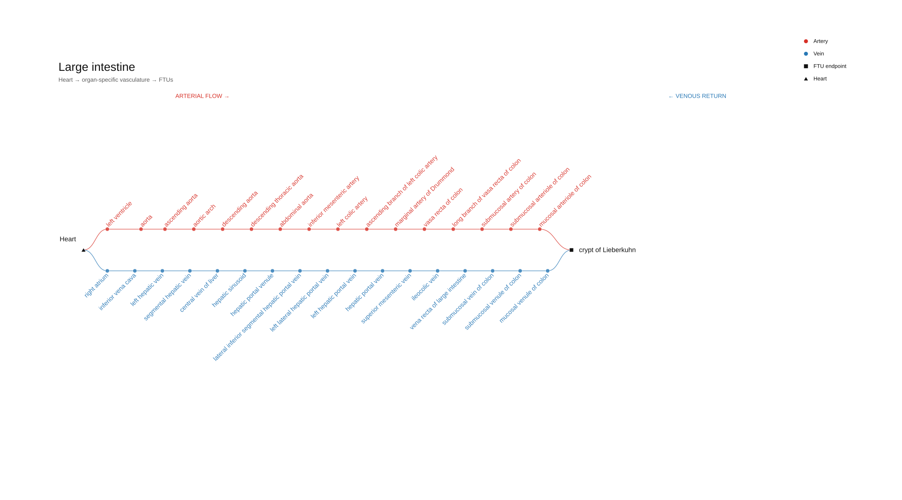

FTU & VCCF Connection Visualization
A scientific visualization showing connections between functional tissue units and the vascular common coordinate framework.

Focus
Making the relationship between functional tissue units and vascular pathways clear across anatomical scales.
Tools
Vega, anatomical data visualization, scientific communication.